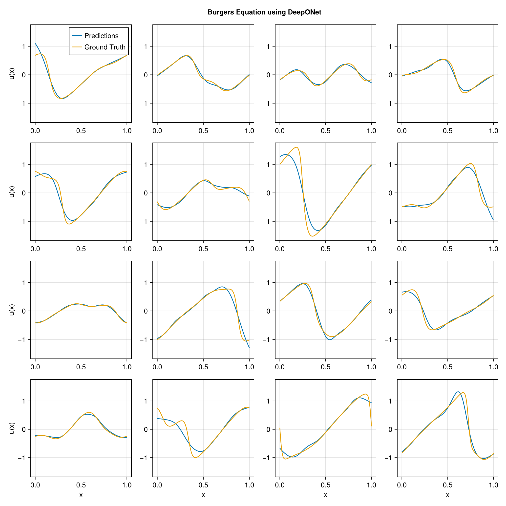

using DataDeps, MAT, MLUtils
using PythonCall, CondaPkg # For `gdown`
using Printf
const gdown = pyimport("gdown")
register(
DataDep(
"Burgers",
"""
Burgers' equation dataset from
[fourier_neural_operator](https://github.com/zongyi-li/fourier_neural_operator)
mapping between initial conditions to the solutions at the last point of time \
evolution in some function space.
u(x,0) -> u(x, time_end):
* `a`: initial conditions u(x,0)
* `u`: solutions u(x,t_end)
""",
"https://drive.google.com/uc?id=16a8od4vidbiNR3WtaBPCSZ0T3moxjhYe",
"9cbbe5070556c777b1ba3bacd49da5c36ea8ed138ba51b6ee76a24b971066ecd";
fetch_method=(url, local_dir) -> begin
pyconvert(String, gdown.download(url, joinpath(local_dir, "Burgers_R10.zip")))
end,
post_fetch_method=unpack
)
)
filepath = joinpath(datadep"Burgers", "burgers_data_R10.mat")
const N = 2048
const Δsamples = 2^3
const grid_size = div(2^13, Δsamples)
const T = Float32
file = matopen(filepath)
x_data = reshape(T.(collect(read(file, "a")[1:N, 1:Δsamples:end])), N, :, 1)
y_data = reshape(T.(collect(read(file, "u")[1:N, 1:Δsamples:end])), N, :, 1)
close(file)
x_data = permutedims(x_data, (2, 1, 3))
grid = reshape(T.(collect(range(0, 1; length=grid_size)')), :, grid_size, 1)
1×1024×1 Array{Float32, 3}:
[:, :, 1] =
0.0 0.000977517 0.00195503 … 0.997067 0.998045 0.999022 1.0
using Lux, NeuralOperators, Optimisers, Zygote, Random
using LuxCUDA
const cdev = cpu_device()
const gdev = gpu_device()
deeponet = DeepONet(;
branch=(size(x_data, 1), ntuple(Returns(32), 5)...),
trunk=(size(grid, 1), ntuple(Returns(32), 5)...),
branch_activation=tanh,
trunk_activation=tanh
)
ps, st = Lux.setup(Random.default_rng(), deeponet) |> gdev;
((branch = (layer_1 = (weight = Float32[-0.007963488 0.00023050094 … 0.048052445 -0.0040430687; 0.062940836 0.06784101 … -0.022565594 0.004255019; … ; 0.014256344 0.026627537 … 0.06766241 0.037960302; 0.07280175 0.021507423 … 0.07875339 0.019192994], bias = Float32[-0.030819975, -0.018793274, 0.025620926, -0.01388412, -0.00167045, 0.0022746362, -0.010418557, -0.011260439, -0.021478035, -0.0018320307 … -0.009176131, -0.029343322, 0.019229282, 0.025165554, 0.024148326, -0.0062527843, -0.0047988594, 0.012296524, 0.024099488, 0.004394643]), layer_2 = (weight = Float32[-0.4359248 0.21305476 … -0.05048841 -0.50525945; -0.16168189 -0.3399836 … -0.39562994 -0.41679358; … ; 0.21841994 -0.13209954 … 0.3812414 0.12576512; 0.39398444 -0.2431407 … -0.12653977 -0.3123146], bias = Float32[0.08220903, 0.09063667, -0.14291216, 0.05973334, -0.12257142, 0.07560985, -0.13882937, -0.038291506, -0.03348746, 0.03549443 … 0.16695593, 0.17515884, -0.060921203, 0.080511376, -0.019582247, -0.12200322, -0.1350262, 0.080225475, -0.16332814, -0.09605524]), layer_3 = (weight = Float32[0.16499624 -0.19748127 … 0.3161219 -0.36529666; 0.32427263 -0.2627457 … -0.35650435 0.25192046; … ; 0.36447588 -0.26735136 … -0.5022933 0.1685243; -0.39117125 -0.3822961 … -0.34276757 0.3186643], bias = Float32[0.15422763, 0.040196862, -0.12171824, -0.07973001, -0.10801727, 0.05250157, -0.07431159, -0.0136328405, -0.054089915, 0.11898601 … -0.15878996, -0.13867056, -0.10869303, 0.09833247, -0.1566156, 0.10301069, -0.1624933, -0.0109562, 0.008284511, -0.17618936]), layer_4 = (weight = Float32[-0.15603732 0.5041241 … -0.23941226 -0.067987904; 0.21933183 -0.15167128 … -0.25597376 0.18847477; … ; 0.15527427 -0.48804173 … 0.22131659 0.15688746; 0.15736726 0.020469518 … 0.2899783 -0.30583772], bias = Float32[0.08069503, -0.09768502, 0.028825536, -0.070427746, 0.003300309, 0.04608265, 0.17345409, -0.1219674, 0.06933435, 0.124441795 … 0.022793163, 0.0690833, 0.10216493, -0.09310551, -0.107380435, -0.17237207, 0.063427046, -0.104224265, 0.16098726, 0.06979807]), layer_5 = (weight = Float32[0.18546766 0.26355958 … 0.2331014 0.13012646; -0.017621588 -0.18216637 … -0.24547563 -0.041529246; … ; 0.006680311 -0.09568473 … 0.099110425 -0.26903754; -0.20650217 0.2568108 … 0.20393613 0.29449707], bias = Float32[-0.13163336, -0.031130696, -0.00757813, -0.1323135, 0.096409924, 0.041310593, -0.10882826, 0.043369383, 0.017838063, -0.11153236 … -0.012461454, -0.13924907, -0.11209586, 0.12275478, -0.0732288, 0.13306166, 0.124642834, 0.083503634, -0.11714957, -0.08743532])), trunk = (layer_1 = (weight = Float32[2.53662; -0.07635709; … ; 1.9453703; -1.947327;;], bias = Float32[0.60017467, -0.9997963, -0.26429975, -0.5454173, 0.061012745, 0.35277355, -0.4307804, 0.09550154, 0.9787177, 0.7590728 … -0.5580127, -0.64382553, -0.10844231, -0.77769566, -0.08540404, -0.35448408, -0.5618093, 0.6236987, 0.64368224, -0.064104915]), layer_2 = (weight = Float32[-0.36649606 0.39628974 … -0.2847342 0.12633835; 0.18885802 -0.3888831 … 0.11875816 0.2987574; … ; -0.09657009 0.3558015 … 0.23730151 -0.13465297; -0.21157146 0.42455092 … 0.036062542 -0.3707358], bias = Float32[-0.0064948085, -0.15209718, -0.079535715, 0.015844982, 0.024331417, -0.03460859, -0.0980789, -0.015230017, -0.0012873122, 0.07257582 … -0.09939719, 0.17042974, -0.16414216, 0.14546776, -0.023522492, -0.12201133, -0.019503264, 0.09797555, 0.15850136, 0.14111178]), layer_3 = (weight = Float32[0.28381997 -0.2619452 … 0.34578216 -0.21366882; 0.068719305 0.48818088 … -0.060258735 -0.1361481; … ; -0.20274168 0.13464142 … -0.4798787 0.17444457; 0.49759513 0.29883125 … -0.16666758 -0.29426274], bias = Float32[-0.01405041, -0.044629067, 0.057353072, -0.14662908, -0.115507565, -0.16598013, 0.038502622, -0.14712147, 0.1733971, 0.028970858 … -0.13494538, 0.108436905, 0.16736099, -0.117893904, -0.02095849, 0.17326346, -0.17055286, -0.1299301, 0.16585332, 0.023203105]), layer_4 = (weight = Float32[-0.17754939 0.27725098 … 0.5025851 0.07657878; 0.41500622 -0.15828092 … -0.39924803 -0.48470294; … ; 0.18441917 -0.46219683 … 0.18390232 0.116936125; 0.13948415 -0.08537357 … 0.1922276 -0.49270332], bias = Float32[0.12796673, -0.051788595, 0.021797001, -0.10596805, -0.16677898, 0.1599772, -0.13728236, -0.12406336, -0.1045649, 0.15238132 … -0.10736901, -0.0015036099, 0.14445603, -0.0059264367, -0.14913374, 0.15301527, 0.12236764, 0.012866253, 0.09385819, -0.098736264]), layer_5 = (weight = Float32[0.18161404 0.0150696 … -0.10571898 -0.14593235; 0.12351839 -0.10684764 … -0.30125192 0.11559156; … ; -0.07586375 0.023130022 … 0.06910485 -0.1683263; -0.19896089 0.06991494 … -0.27978957 -0.25165513], bias = Float32[0.12786971, -0.1767071, -0.13336957, -0.1676287, 0.028213795, -0.11407287, 0.06850148, -0.086084895, 0.1709445, -0.008591635 … 0.110362574, -0.04549352, -0.06794209, -0.14352617, -0.067048326, -0.15725556, -0.16328911, -0.050584584, 0.06284076, 0.09500089])), additional = NamedTuple()), (branch = (layer_1 = NamedTuple(), layer_2 = NamedTuple(), layer_3 = NamedTuple(), layer_4 = NamedTuple(), layer_5 = NamedTuple()), trunk = (layer_1 = NamedTuple(), layer_2 = NamedTuple(), layer_3 = NamedTuple(), layer_4 = NamedTuple(), layer_5 = NamedTuple()), additional = NamedTuple()))
x_data_dev = x_data |> gdev
y_data_dev = y_data |> gdev
grid_dev = grid |> gdev
function loss_function(model, ps, st, ((v, y), u))
û, stₙ = model((v, y), ps, st)
return MAELoss()(û, u), stₙ, (;)
end
function train_model!(model, ps, st, data; epochs=5000)
train_state = Training.TrainState(model, ps, st, Adam(0.0001f0))
for epoch in 1:epochs
_, loss, _, train_state = Training.single_train_step!(
AutoZygote(), loss_function, data, train_state)
if epoch % 25 == 1 || epoch == epochs
@printf("Epoch %d: loss = %.6e\n", epoch, loss)
end
end
return train_state.parameters, train_state.states
end
ps_trained, st_trained = train_model!(
deeponet, ps, st, ((x_data_dev, grid_dev), y_data_dev))
((branch = (layer_1 = (weight = Float32[-0.015490309 -0.00811736 … 0.042270005 -0.010711935; 0.06256845 0.06762021 … -0.023160739 0.0037579008; … ; 0.0045371354 0.017436514 … 0.057081148 0.027776567; 0.056395 0.004418533 … 0.06389696 0.0035321754], bias = Float32[-0.020726223, -0.04173449, 0.06986936, -0.029467918, 0.020551676, -0.04157678, -0.1714504, -0.08508575, -0.052284777, -5.930703f-5 … -0.005205798, -0.048277404, -0.0055074035, 0.032438498, 0.040929202, -0.028476862, 0.043783467, 0.03413721, 0.15516524, -0.06564847]), layer_2 = (weight = Float32[-0.4624612 0.16936642 … -0.05048324 -0.48257378; -0.15765612 -0.33594203 … -0.37113753 -0.41177246; … ; 0.21513687 -0.15449265 … 0.35806617 0.12714253; 0.4029865 -0.2222517 … -0.0993039 -0.30293682], bias = Float32[0.11089579, 0.1104152, -0.19450967, 0.012548478, -0.16094826, 0.052558627, -0.13964856, -0.0364527, -0.024284063, 0.051684774 … 0.16596986, 0.24655493, -0.06521816, 0.19839081, -0.073420115, -0.011465893, -0.17824037, 0.12274461, -0.21377367, -0.14452845]), layer_3 = (weight = Float32[0.17246242 -0.19485812 … 0.30833098 -0.320265; 0.34226984 -0.29952687 … -0.22233064 0.25890526; … ; 0.382711 -0.25998637 … -0.42418575 0.17789055; -0.37187156 -0.3740755 … -0.2513036 0.38146424], bias = Float32[0.1833273, -0.049606293, -0.20923446, -0.096277975, -0.16634513, 0.034882206, -0.13006967, -0.022349102, -0.04439366, 0.14986092 … -0.14210746, -0.10727355, -0.10643318, 0.16664892, -0.1269175, 0.08495411, -0.18224621, -0.016819078, -0.004303228, -0.2544823]), layer_4 = (weight = Float32[-0.18195643 0.46904045 … -0.23049772 -0.11515439; 0.22353326 -0.14105316 … -0.23831537 0.20581348; … ; 0.099095896 -0.40255287 … 0.1945175 0.11292322; 0.1978449 -0.015946073 … 0.27835935 -0.2609921], bias = Float32[0.097865246, -0.13918751, 0.113192394, -0.04078828, 0.043216895, 0.1755416, 0.059192084, -0.15031028, 0.05839804, 0.15995894 … 0.084259406, 0.07050056, 0.08977067, -0.07086344, -0.117712446, -0.15228121, 0.053589486, -0.11766803, 0.21016264, 0.07749135]), layer_5 = (weight = Float32[0.19997299 0.26886442 … 0.22696854 0.1299323; -0.004362035 -0.17919676 … -0.2607852 -0.052126594; … ; 0.038973566 -0.07220739 … 0.09559776 -0.30621842; -0.19004011 0.26380134 … 0.21738103 0.31118643], bias = Float32[-0.12719962, -0.01847133, -0.015839867, -0.1254742, 0.10328463, 0.043208767, -0.10053926, 0.038196493, 0.012217265, -0.11513868 … -0.009261079, -0.15559186, -0.10590536, 0.1328268, -0.058851715, 0.12709925, 0.113340214, 0.08239124, -0.10484659, -0.08712588])), trunk = (layer_1 = (weight = Float32[2.51476; -0.08041512; … ; 2.000129; -1.9002498;;], bias = Float32[0.5607356, -0.9871026, -0.31821066, -0.55792004, 0.014905808, 0.31484446, -0.42719644, 0.07600099, 1.012317, 0.7620641 … -0.55301785, -0.69880307, -0.11582581, -0.7705666, -0.0874088, -0.3102106, -0.54994786, 0.6655905, 0.5995314, -0.0035701862]), layer_2 = (weight = Float32[-0.39852956 0.42827934 … -0.31632772 0.15117723; 0.17729206 -0.3723188 … 0.107252166 0.30642936; … ; -0.106001325 0.3712457 … 0.22746256 -0.1391011; -0.2287424 0.44105265 … 0.017804215 -0.34615585], bias = Float32[-0.038507707, -0.16890751, -0.1063156, 0.0065432712, 0.008114928, -0.015877249, -0.124853045, -0.032366894, -0.029596042, 0.07281049 … -0.04689169, 0.16027616, -0.16971806, 0.13399668, -0.06759791, -0.11597463, -0.026451876, 0.09508817, 0.14272554, 0.12548405]), layer_3 = (weight = Float32[0.29676074 -0.2778978 … 0.33213878 -0.22493134; 0.0653023 0.48983315 … -0.058039162 -0.14009161; … ; -0.23335037 0.14173938 … -0.46536005 0.2074939; 0.4729862 0.33125877 … -0.13352562 -0.29703236], bias = Float32[-0.026542263, -0.041113846, 0.045557316, -0.1346936, -0.10982476, -0.1584132, 0.02553547, -0.18530716, 0.17636578, 0.03532215 … -0.13353017, 0.12140342, 0.17467932, -0.036175005, -0.025378427, 0.17133489, -0.17669517, -0.10746095, 0.19743282, 0.046942435]), layer_4 = (weight = Float32[-0.17093556 0.27465713 … 0.4985866 0.080133095; 0.4298578 -0.15205601 … -0.4110712 -0.47425345; … ; 0.19572072 -0.4602903 … 0.17271249 0.12533781; 0.15299271 -0.050483312 … 0.17954239 -0.4783712], bias = Float32[0.12390842, -0.06414403, 0.012449837, -0.11560515, -0.14006844, 0.16224837, -0.12437742, -0.11698625, -0.09403227, 0.15088306 … -0.12023436, -0.0042505907, 0.14323302, -0.0014633542, -0.1105323, 0.13451275, 0.13266581, 0.03697457, 0.08392314, -0.11216254]), layer_5 = (weight = Float32[0.1772833 0.005838674 … -0.11589701 -0.14106202; 0.13617112 -0.08604363 … -0.3166918 0.13284592; … ; -0.05759455 0.01881454 … 0.06949427 -0.1734755; -0.24065854 0.09338378 … -0.30567482 -0.17125544], bias = Float32[0.13814516, -0.16727686, -0.15135986, -0.16159663, 0.034400612, -0.09786727, 0.06709226, -0.1018576, 0.1661037, -0.020995544 … 0.11932231, -0.03237926, -0.053782467, -0.13420561, -0.09543135, -0.16444804, -0.16539349, -0.043388575, 0.06912393, 0.10979123])), additional = NamedTuple()), (branch = (layer_1 = NamedTuple(), layer_2 = NamedTuple(), layer_3 = NamedTuple(), layer_4 = NamedTuple(), layer_5 = NamedTuple()), trunk = (layer_1 = NamedTuple(), layer_2 = NamedTuple(), layer_3 = NamedTuple(), layer_4 = NamedTuple(), layer_5 = NamedTuple())))
using CairoMakie
pred = first(deeponet((x_data_dev, grid_dev), ps_trained, st_trained)) |> cdev
begin
fig = Figure(; size=(1024, 1024))
axs = [Axis(fig[i, j]) for i in 1:4, j in 1:4]
for i in 1:4, j in 1:4
idx = i + (j - 1) * 4
ax = axs[i, j]
l1 = lines!(ax, vec(grid), pred[idx, :, 1])
l2 = lines!(ax, vec(grid), y_data[idx, :, 1])
i == 4 && (ax.xlabel = "x")
j == 1 && (ax.ylabel = "u(x)")
if i == 1 && j == 1
axislegend(ax, [l1, l2], ["Predictions", "Ground Truth"])
end
end
linkaxes!(axs...)
fig[0, :] = Label(fig, "Burgers Equation using DeepONet"; tellwidth=false, font=:bold)
fig
end
